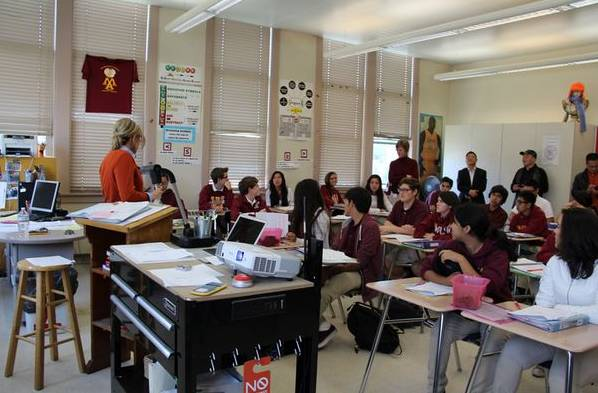

互惠动态
|
|
【中美文化教育】到底存在哪些大不同
提示：点击上方"ASC"↑免费订阅本刊
大不同之一：考试制度
首先，美国并没有和中国一样的全国大学入学统考，所谓的美国“高考”，通常指的是学术性向测验”(Scholastic Aptitude Test )，即SAT考试；和美国高等教育测试中心(American College Testing Program )，也每年举行“美国大学入学考试”，即ACT考试。这两个考试成绩，会被各个大学作为入学参考，特别是SAT，几乎所有的美国高校，都接受SAT成绩。
其次，和中国高考一年一次，并且“一考定终身”不一样，这两个考试都是一年内多次举办，以SAT为例，每年举行7次，不限制考生的年龄和参加次数，低年级的优秀学生也可以提前考试，选取最好的一次成绩申报大学即可。
大不同之二：录取过程
和中国大学的统一招考也不一样，美国的大学招生更加的具有独立性，由考生自己申请心仪大学的方式，也实现了考生和高校之间完全的双向选择。再者，SAT和ACT的考试成绩也不是唯一的通行证，美国高校在选拔入学新生时，还需要看学生日常学业平均成绩、个人的才艺(如音乐、体育才能等)、社区服务表现、入学目的和人生志向、辅导老师的推荐信等。
此外，很多名校还会在录取前安排面试，面试地点可能是大学，也可能是离考生最近的某城市的该校校友会。通过面试更真切的了解考生，决定是否录取及给予何种奖助学金。
大不同之三：课程设置
进入大学之后，美国大学的课程设置和教学方式也与中国截然不同，中国的大学一定程度上还是注重专业化技能化，学生在被大学录取之时，就已经确立了所学的专业，进入学校后，所学习的课程也围绕专业开展。而美国大学则是通才教育，一定程度上允许学生自由发展，大学教育不是只针对某个技能开展，而是让学生拥有更广阔的视野。
基于这个理念，美国的大学生在进入大学校门之后，并没有专业之分，而是按照一定的要求学习一些公共课程。这些公共课程涵盖面很广，包括文学、艺术、历史、哲学、人文、社会、数学、科学等几大领域。学生到三年级后，才会综合考量选择专业，确立专业后进行专业课程的学习。因此，美国的大学教育培养出来的学生在知识宽度、平衡性方面有着显著的优势。

大不同之四：校内活动
基于教学方式本质上的不同，所有的学生都有机会在同一个课堂里上课，因此美国大学中也没有中国大学这样传统上的班级概念，更不可能有按照班级管理而衍生的辅导员系主任等管理模式。在美国大学中，学生通常按住宿生活区域来管理，每个宿舍区域都有各自的食堂、洗衣房、健身房和自习室等设施，经常会组织各种文娱活动，来自不同专业和不同国度的学生生活在一起，文理相容，相互滋养。
除了丰富多彩的社团活动，美国大学课业压力也和中国大学形成鲜明对比，对于美国大学生来说，上课仅仅是一个小部分，课堂之外需要团队讨论协作完成的留堂作业才是重头戏，一周花超过40个小时完成课业并不少见。因此校园里各种小组研究和讨论活动，也成为了美国大学一道亮丽的风景线。
大不同之五：办学理念
中美大学最不同的一点还在于，中国高校基本为国家公立，知名高校更是一水的国字招牌，而美国则是公私立并行的教育体系，更奇妙的是，大部分享誉全球的知名的高校基本是私立大学。
不过，无论是公立还是私立，每一所美国知名高校都具有浓郁的“个人风格”，从不会“千校一面”。各个学校在招生时，都会要求考生说明选择本校的原因，也更倾向于录取更符合本校办学理念和培养人才理念的学生。比如，耶鲁大学学风严谨，注重培养学生的独立精神；哈佛大学则崇尚学术自由，富有改革精神；另一所著名高校普林斯顿，则具有浓厚的欧式学风，坚持着精英教学模式。